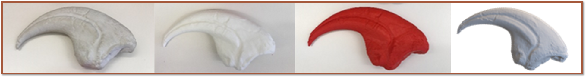
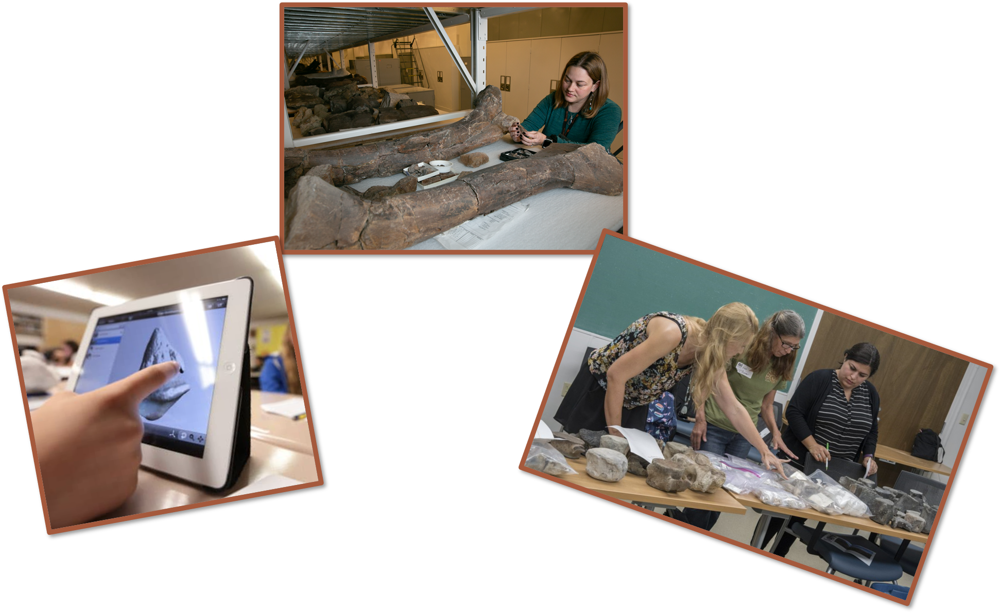

Beyond the Mouse: Innovating Hands-On Training in Digital Environments.
Role: UX Researcher Processes: Contextual Inquiry, Usability Study, A/B Testing, Think-Aloud, Behavior Analysis, Thematic Coding, Data Processing, Statistical Analysis. Goal: To replicate the immersive and meaningful experiences of hands-on training in a digital space, ensuring that key elements of engagement, interactivity, and real-world efficacy are maintained while expanding access to a larger audience.
Project Background
"There are a lot of rural schools that get our program when we come to them, but we want them to be able to tap into our programs even when we can't physically be there."
This heartfelt statement from a key stakeholder set the tone for the project and emphasized the importance of expanding access to educational opportunities. The Research Quest platform, developed by the Natural History Museum of Utah, is a program designed to foster critical thinking skills through inquiry-based science investigations. By immersing users in real-world challenges in fields like paleontology, archaeology, and biology, the program trains students to think like scientists—an experience that had historically been delivered through in-person, hands-on activities.
But to expand its reach, especially to underserved rural communities, the program needed to transition from a traditional, in-person format to a digital platform. This shift presented a unique challenge: how could we design a digital experience that preserved the essential qualities that made these hands-on, real-world activities so impactful?
Working in close collaboration with designers, educators, and other stakeholders, our team identified three key factors that made the in-person program successful. These became the guiding principles—and the metrics for success—as we embarked on the design process:
- Engagement and Enjoyment – The experiences needed to captivate and hold students' attention, inspiring curiosity and enthusiasm for science.
- Depth of Cognitive Processes – The platform needed to stimulate critical thinking and reasoning, mirroring the depth of thought required in real-world scientific exploration.
- Hands-On Interaction with Objects – The program’s core strength was its ability to provide tangible, experiential learning. Replicating this sense of hands-on engagement digitally was critical.
The research presented below outlines my approach, processes, methods, and findings that ultimately informed the design of a digital platform that could preserve these essential factors while extending the program's reach to a broader audience. By grounding my work in these guiding principles, I was able to deliver actionable recommendations that bridged the gap between in-person and digital learning experiences.
Research Problem
The primary challenge was replicating the core elements of hands-on learning in digital environments while maintaining the program’s impact on user engagement and learning outcomes. Transitioning from in-person to digital learning wasn’t just about moving content online—it required a thoughtful approach to ensure the new platform preserved the unique benefits of real-world, hands-on experiences.
To tackle this challenge, I broke the research into three strategic phases, each designed to address a critical aspect of the problem. These phases ensured that the project would progress methodically, from understanding the cognitive and behavioral mechanisms of effective learning to testing and iterating on design solutions.
- Phase 1: Develop a framework to measure the key cognitive processes and interactive behaviors users deploy during hands-on training. A framework that would serve as a baseline for comparing different learning modalities.
- Phase 2: Compare digital and real-world learning experiences to identify user experience differences and their impact on cognition, interactive behaviors, and engagement.
- Phase 3: Evaluate the effect of substantial design changes informed by Phase 2 findings on user processes, behaviors, and overall learning outcomes.
Each phase was built on a foundation of user-centered research, allowing us to continually refine our understanding of how to effectively replicate hands-on experiences in a digital format. This approach ensured that the design solutions were informed by real user data at every step.
Phase 1 Study: Developing a Framework to Measure Interactive Behaviors and Cognitive Processes
Research Problem
The primary objective of Phase 1 was to create a validated coding framework to measure interactive behaviors and cognitive processes, two of the three success metrics for the Research Quest project. While the project had a validated survey to assess engagement and enjoyment, it lacked a systematic method for evaluating these other critical dimensions. Without a way to measure cognitive processes or interactive behaviors, it was impossible to comprehensively assess how users interacted with physical and digital learning tools or how these interactions supported deeper cognitive engagement.
Approach: Inductive Coding to Develop the Frameworks
I began this phase with access to over 30 hours of video recordings from classroom sessions that had taken place prior to my involvement in the project. These sessions featured groups of six users working collaboratively on a task to classify 3D-printed fossils based on their type (e.g., jawbone) and origin (e.g., carnivore or herbivore). While the task may seem simple, it was specifically designed to encourage users to engage in making observations, building evidence-based arguments, and forming inferences—key cognitive processes that support critical thinking.
To create the frameworks, I used an inductive coding approach, which involves deriving categories directly from observed behaviors and verbalizations, rather than starting with predefined categories. Here’s what this process looked like for each framework:
-
Interactive Behaviors: I meticulously observed each user in the videos and documented every
distinct way they manipulated the physical and digital objects (iPads displaying digital fossils). After completing
this process for all users, I identified common behaviors across participants. These behaviors were grouped into the
following categories:
- Rotation: Rotating the object on any axis to examine different perspectives.
- Directed Attention: Using a finger or gesture to guide others’ attention to a specific area.
- Embodiment: Using the object to demonstrate its potential form (e.g., placing a claw on the head like a horn) or function (e.g., mimicking a clawing motion).
- Other: Behaviors that didn’t fit into the above categories, such as playful interactions.
-
Cognitive Processes: Using transcripts from the video recordings, I segmented user dialogue
into individual statements, each representing a complete idea (e.g., “That looks like it could be a leg bone.”).
These segments were then analyzed to identify the cognitive process being demonstrated, which resulted in the
following categories:
- Observation: Statements describing the object’s shape, size, color, or other features (e.g., “It has a really sharp point at this end.”).
- Hypotheses: Simple theories about the object’s identity or function (e.g., “I think it is a spine of an animal.”).
- Evidence-Based Reasoning: Statements that used evidence to support a theory (e.g., “It is really smooth right here, so it might have been used to grind plants.”).
- Other: Statements unrelated to the task, such as metacognitive reflections or clarifying group tasks.
To ensure the reliability of the coding frameworks, I conducted an Inter-Rater Reliability (IRR) analysis. A second rater independently coded a subset of the data, and we achieved a high agreement rate of 94%. This validation step confirmed that the frameworks were robust and could be used reliably in subsequent research phases.
Recommendations
Based on these findings, I collaborated with stakeholders to refine the focus of the analysis. We agreed to classify cognitive processes into two tiers:
- Shallow Processes: Observations and evidence-free hypotheses.
- Deep Processes: Evidence-based reasoning and inferences.
For interactive behaviors, we decided to exclude categories that would not be relevant in isolated digital experiences, such as directed attention, which relies on group collaboration. These refinements helped streamline the coding frameworks for use in the next phases of research.
Exploratory Findings
As part of the inductive coding process, I also documented whether each observed behavior or cognitive process occurred with a physical object or a digital object. While the primary focus of this phase was to develop a valid coding framework, this additional layer of detail allowed me to conduct a preliminary exploratory analysis to examine potential differences between tangible and digital tools.
Using a Multivariate Analysis of Variance (MANOVA), I compared the frequency and types of cognitive processes and interactive behaviors across physical and digital objects. This analysis revealed several notable patterns:
-
Cognitive Processes:
- Interactions with physical objects were associated with a significantly higher frequency of deep cognitive processes, such as evidence-based reasoning and inference-making.
- In contrast, interactions with digital objects were dominated by shallow cognitive processes, such as simple observations and surface-level hypotheses.
-
Interactive Behaviors:
- Physical objects elicited a greater diversity of behaviors, including a high frequency of embodied interactions (e.g., using a claw-shaped object to mimic its functional use).
- Digital objects, however, were primarily manipulated through rotations, with embodied interactions entirely absent.
Interestingly, the results also suggested a potential relationship between the depth of cognitive processing and the type of interactive behavior. For example, rotations—the most common behavior with digital objects—appeared to be associated with shallow cognitive processes. This pattern hinted at an interplay between how users interact with objects and the cognitive depth of their engagement.
Lessons Learned
While the coding frameworks were successfully developed and validated, this phase highlighted several limitations that informed future work. One major challenge was that the videos were recorded for a different purpose, meaning some behaviors occurred outside the camera’s view, and some verbal statements were inaudible due to the noise generated by the collaborative nature of the session. Additionally, the simultaneous availability of both physical and digital objects created confounding variables that complicated the analysis, as it was difficult to determine whether behaviors or cognitive processes were influenced by the physical or digital tool.
These lessons were invaluable as they guided the design of the subsequent phase. In future analyses, I would ensure a more controlled and targeted approach to capture only the relevant interactions and cognitive processes. Specifically, it became clear that further investigation was needed to test the association between certain behaviors (such as rotations) and depth of cognitive processing—a pattern suggested by the exploratory analysis findings.
Phase 2: Comparing Digital and Physical Training Experiences
Research Problem
In Phase 2, the goal was to compare the effectiveness of digital versus physical training experiences, examining how each influenced three key metrics: hands-on interactions, cognitive processing, and engagement. Following the insights from Phase 1, it was clear that interactions with either type of object—physical or digital—affected the depth of cognitive engagement and user involvement. The study was designed to assess how these two mediums impacted users’ learning experiences, considering that users would be interacting with the training tools independently at home, as they would in the digital platform's real-world application.
The core questions of Phase 2 were:
- Do users engage in different hands-on interactions depending on if their experience is digital or physical?
- Do users engage in different depths of cognitive processes depending on if their experience is digital or physical?
- Do digital and physical users percieve their experience to be different in terms of engagment, ease-of-use, enjoyment, and task usefulness?
Methodology
In this phase, users were randomly assigned to one of two groups:
- Physical Group: Participants worked with 3D printed dinosaur fossils.
- Digital Group: Participants used digital 3D models of the same fossils displayed on a desktop computer interface.
Both groups were tasked with identifying and classifying bones as coming from either a herbivore or carnivore, following the same task from Phase 1. To track cognitive engagement, participants were asked to think aloud while completing the task, verbalizing their thoughts, hypotheses, and reasoning. These verbal utterances were coded for shallow or deep processing.
Behavior was coded as rotation or embodied manipulation. All participants completed the task alone, simulating a real-world scenario where users would interact with the platform independently. This was recorded via video to capture each user’s behavior, while verbal data was transcribed.
Upon completing the task, participants filled out a feedback survey to evaluate their engagement, enjoyment, ease-of-use, and perceived effectiveness of the training tool.
Findings
A second rater was involved in coding the data to ensure reliability. The inter-rater reliability (IRR) between the coders was found to be .92, indicating a high level of agreement in coding user behaviors and verbal processes.
The data revealed notable differences between the two groups, particularly regarding hands-on interactions, cognitive processing, and engagement:
- Hands-on Interactions:
- Digital Users: Primarily engaged in rotational behaviors (99% of the time).
- Physical Users: Engaged in both rotational and embodied manipulations (e.g., holding, turning, adjusting the objects).
- Cognitive Processing:
- Digital Users: Displayed shallow processing, focusing on surface-level observations without deeply connecting concepts to evidence.
- Physical Users: Demonstrated deep cognitive processing, often making evidence-based connections and drawing inferences as they manipulated the objects.
- Engagement:
- Feedback surveys revealed similar levels of engagement, enjoyment, and perceived training value across both groups.
- However, digital users rated the ease-of-use of the digital interface lower than physical users rated the tangible objects, suggesting that the digital interface was more challenging to use.
Chi-square Association Analysis
The analysis of the association between behavior and cognitive depth revealed some concerning patterns. The data showed that:
- Rotational behaviors (common among digital users) were strongly linked to shallow cognitive processing.
- Embodied manipulations (only physical users) were linked to deep cognitive processing.
This reinforced the earlier observation that the digital platform’s limitations in supporting embodied interactions hindered the depth of cognitive processing. Digital users, who predominantly rotated the objects, were unable to engage with the objects in ways that fostered deeper thought, while physical users, who could physically manipulate the fossils, naturally engaged in more profound cognitive analysis.
Recommendations
The findings strongly suggested that digital tools alone were insufficient to support the level of cognitive depth we were hoping to achieve. While engagement and enjoyment were positive across both groups, the ease-of-use and cognitive depth were lacking in the digital group. A critical redesign of the digital interface was necessary to allow for more natural, hands-on interactions, similar to those experienced with physical objects.
My primary recommendation was to focus on interfaces that afforded more natural interactions with the objects and better support embodied manipulations, helping users engage with the objects in ways that foster deeper cognitive processing.
Lessons Learned
I was happy that my coding frameworks were effective and produced actionable insights. However, I was unhappy with the lack of context surrounding the survey. Moving forward, I will ensure that whenever possible, interviews or follow-ups will be used to gather more context around user feedback.
Phase 3: Usability Study
In Phase 3, I conducted a usability study to evaluate different motion controller interfaces for the digital platform. Based on findings from Phase 2, where we identified a gap in embodied interactions, it became clear that the desktop (mouse) interface couldn't provide the depth of interaction needed for users to engage fully with the content. We needed to explore alternative digital interfaces that could facilitate more natural, hands-on interactions.
Research Problem
Our key challenge was to find a motion-based interface that could provide the type of embodied interactions observed in physical object manipulation, which was crucial for fostering deep cognitive processing. After reviewing market trends and available technologies, we decided to explore motion controllers, which had become increasingly available and prevalent in homes. This presented us with another design challenge: choosing between two common approaches to using motion controllers:
- Two Controllers: Each controller acts as a surrogate for the user’s hands, allowing them to interact directly with virtual objects.
- Single Controller: One controller serves as both the object and the interaction tool, where the user's actions on the controller are mirrored by the virtual object.
Our designer created two versions of a virtual reality platform, each utilizing one of the controller methods, for an A/B usability study. Additionally, I used a control condition with a traditional desktop and mouse interface to compare the motion controller versions with the previously tested digital interface.
Methodology
As with previous phases, I used random assignment to divide participants into three groups:
- Single Controller: A motion controller that acted as both the object and the interaction tool.
- Double Controllers: Two motion controllers acting as the user’s hands to manipulate objects.
- Control (Mouse): A traditional desktop interface using a mouse for interactions.

The task was to determine whether an object was a tool or a bone (some bones were fossils, and others were contemporary), and to describe how the object was used or functioned. The coding frameworks and methods from Phase 2 were applied here as well, including the recording and coding of user behaviors and the transcription and coding of verbal data. This time, however, I did not conduct an association analysis due to time constraints.
Participants completed a post-task survey (identical to the previous phases) and participated in an unstructured interview. The interview allowed users to share their experiences with the interface, task performance, and any challenges or insights they had during the session.
Findings
The results of this usability study revealed several key insights regarding the effectiveness of each interface:
- Control Interface (Mouse): This group still performed the lowest, showing no embodied interactions and primarily engaging in shallow cognitive processing.
- Double Motion Controllers: Users in this group engaged in a higher frequency of embodied interactions and deeper cognitive processes than the control group. However, the differences were not statistically significant.
- Single Motion Controller: This group exhibited significantly higher rates of both embodied behaviors and deep cognitive processing, closely resembling the engagement levels seen with physical interactions in Phase 2 (though not directly comparable due to methodological differences).
Feedback from the users indicated that while all groups rated the platform highly for engagement, enjoyment, and task usefulness, there were notable differences in ease-of-use ratings:
- Control Group: Rated the ease-of-use the lowest, primarily due to the inability to engage in interactions beyond basic rotation.
- Double Controller Group: Reported difficulty in coordinating both hands for object manipulation and expressed challenges during the onboarding process, making it harder to get used to the interface.
- Single Controller Group: Rated ease-of-use very highly, with users commenting that the interface was intuitive and easy to learn, even for those with little to no prior experience with motion controllers.
Recommendations
Based on these findings, I recommended that the project move forward with the single motion controller interface as the most effective and user-friendly option. The single controller provided the most natural interactions and was intuitive for users, even those without prior experience using such interfaces. Additionally, this direction paved the way for the next phase of design, which would involve enhancing the virtual reality environment and refining the onboarding process to further improve the user experience.
Results & Impact
Summary of the research findings and actionable insights.
Overview of Project Goals and Success Metrics
The goal of this project was to address a critical need in digital education: creating meaningful, hands-on learning experiences in virtual spaces. The central challenge was to develop a platform that could engage students, stimulate critical thinking, and replicate the meaningful experiences that are associated with real-world, hands-on learning. To measure the success of the platform, we focused on three key metrics that were integral to achieving our project goals:
- Engagement and Enjoyment: The platform needed to capture and hold students' attention, inspiring curiosity and enthusiasm for science. This metric was essential to ensure that users felt immersed in the experience and motivated to continue exploring the content.
- Depth of Cognitive Processes: Our goal was for the platform to go beyond simple task completion. It needed to engage users in deep, critical thinking and reasoning, akin to the kind of cognitive processes required in real-world scientific exploration.
- Hands-On Interaction with Objects: As the heart of the learning experience, the platform’s ability to replicate real-world tactile engagement was crucial. Users needed to interact with digital objects in ways that felt natural and intuitive, simulating the hands-on experience of physical exploration.
Meeting the Success Metrics
Through a rigorous research process, which included controlled lab studies, usability tests, and user interviews, we gained valuable insights into how the platform performed in relation to these metrics. The results were clear: we not only met the success criteria, but we also exceeded expectations in some key areas. Let’s dive deeper into each of these metrics to understand how we achieved meaningful outcomes for users.
Engagement and EnjoymentEngagement is the cornerstone of any successful learning platform, and from the outset, our research focused on understanding how users interacted with the interface and how these interactions affected their interest in the task. The data revealed that the motion controller interfaces, particularly the single controller design, significantly increased user engagement compared to the desktop interface (control group). Users reported feeling more “in the zone,” actively participating and exploring the task, which involved identifying tools versus bones and assessing their functionality. This sense of immersion was pivotal, as the single motion controller design allowed for smooth, natural movements that felt intuitive, even for users with limited experience with such interfaces.
In contrast, the desktop mouse interface, while functional, didn’t capture users’ attention in the same way. Without the embodied interaction—being able to physically move, rotate, and manipulate objects in a digital space—users reported disengagement and a lack of motivation to continue. The feedback was clear: users wanted a more interactive, hands-on experience, and that’s exactly what the motion controller interfaces provided. Engagement levels were visibly higher for the motion controller users, and they found the experience much more enjoyable.
Depth of Cognitive ProcessesAnother core objective was to ensure that the platform encouraged deeper cognitive processing, mimicking the kinds of mental exercises students would face in real-world scientific contexts. This metric was evaluated by analyzing the users’ problem-solving behavior and their approach to identifying and assessing the tools and bones in the task. The single motion controller group demonstrated the highest levels of critical thinking and reasoning, often pausing to examine objects from different angles, hypothesizing their function, and comparing their characteristics.
In comparison, the control group, limited to the desktop interface, focused more on task completion with less engagement in cognitive exploration. The lack of embodied interaction with the objects led to a more superficial approach to the task. Users didn’t feel the need to critically analyze the objects as deeply, and the cognitive engagement reflected that. This insight emphasized the importance of providing users with the tools and freedom to explore, think critically, and make sense of the objects in a way that mirrors real-world scientific investigation.
Hands-On Interaction with ObjectsPerhaps the most critical metric for the success of this project was the ability to replicate the hands-on experience of interacting with physical objects. The motion controller interfaces, particularly the single controller setup, proved to be the most effective at providing this tactile engagement. Users in this group found the interface intuitive and easy to use, quickly learning how to manipulate objects in ways that felt natural. They were able to “pick up” virtual tools and bones, rotate them, and examine them from various perspectives, which allowed them to engage with the content more deeply and meaningfully.
Feedback from users in the single motion controller group was overwhelmingly positive regarding the naturalness of the interaction. This was critical, as one of the main goals was to bridge the gap between physical and digital learning experiences. In contrast, the double controller group reported difficulties in coordinating both hands, and users found the onboarding process challenging. While still offering embodied interaction, this design was not as intuitive as the single controller, and the extra cognitive load required to coordinate both controllers detracted from the overall experience. The control group, using the desktop interface, was entirely disconnected from the physicality of the task, leading to disengagement and more shallow interactions with the objects.
Final Assessment: Did We Meet Our Goals?
After reviewing the results, it’s clear that we met our success metrics in all three areas—engagement, cognitive depth, and hands-on interaction. The motion controller interfaces, especially the single controller setup, provided users with a highly engaging and enjoyable experience that encouraged deeper cognitive processing. Furthermore, the ability to interact with virtual objects in a hands-on, embodied manner was crucial to creating an immersive learning environment. These findings underscore the value of embodied interaction in fostering engagement and cognitive growth, and they validate the design choices made throughout the project.
Moving Forward
Building on these successful outcomes, the next steps will focus on refining the platform to further enhance its usability and educational effectiveness. This includes improving the virtual reality environment, creating a more seamless onboarding process, and expanding the types of objects and tasks that users can engage with. The positive impact on users—seen in both their engagement levels and cognitive outcomes—demonstrates the power of motion-based interaction in digital learning spaces. The research findings have laid a strong foundation for continued development and optimization, ultimately creating a more immersive, engaging, and intellectually stimulating educational platform.
Lessons Learned
Reflection on the project, highlighting key learnings and future considerations.
Through the course of this project, I learned how to develop detailed, validated frameworks to address complex user behaviors and processes. When designing for an immersive learning platform, it became evident that understanding user behavior in such a rich, dynamic environment requires a comprehensive approach. This experience taught me how to not only identify user pain points but also create structured methodologies for understanding the “why” behind their actions. It’s not just about solving immediate usability problems but also ensuring that the solutions align with deeper user needs and behaviors. Developing frameworks that combine qualitative insights with quantitative rigor proved invaluable for driving impactful design decisions.
One of the most important realizations from this project was the critical role of context in understanding user behavior—something that’s often overlooked in many research studies. Surveys, while incredibly useful for capturing broad patterns or quick insights, frequently tell you only what’s on the surface. They provide data points, but often lack the nuance and context needed to fully interpret those findings. Without this context, it’s easy to misdiagnose user pain points or miss opportunities to deliver meaningful improvements. For example, a survey might reveal that users rate an experience as “challenging,” but only through observational studies, interviews, or usability tests can you uncover the specific moments where users struggle—or even the root causes behind that struggle.
This insight reshaped the way I approach research, particularly in balancing methods. While surveys remain an excellent tool for gathering large-scale data quickly, they must be paired with methods like direct observation, task analysis, and contextual inquiry to uncover deeper truths about user behavior. For instance, in this project, understanding how students interacted with virtual objects required more than self-reported data; it necessitated watching their movements, analyzing their thought processes as they manipulated tools, and asking questions in real time about what felt intuitive or frustrating. It was in these moments of observation and follow-up inquiry that the most actionable insights emerged.
Another key takeaway is that users often can’t articulate what they need or want without the proper scaffolding. Surveys may capture user sentiment, but they rarely help uncover the hidden factors influencing those sentiments. To truly understand what matters most to users—and what’s holding them back—we have to step into their shoes and immerse ourselves in their experience. Contextual research helps bridge this gap, allowing us to better empathize with users and create solutions that are both functional and meaningful.
Looking ahead, I’ll carry these lessons into future projects by ensuring that I design research strategies with a balance of breadth and depth. Surveys will remain a valuable tool in my research arsenal, but I’ll also prioritize methods that allow me to dig deeper into user experiences. By combining large-scale data collection with contextual, observational research, I can ensure that the insights I uncover are not only accurate but also deeply rooted in the reality of user behavior. These lessons have fundamentally reshaped how I think about research and have strengthened my ability to advocate for designs that truly meet user needs.